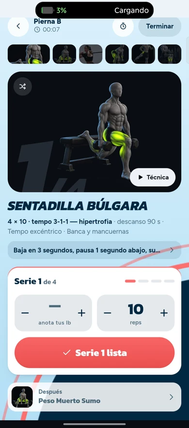
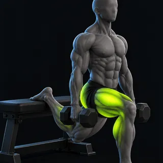
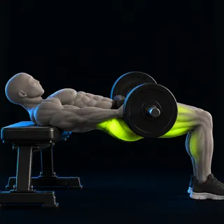
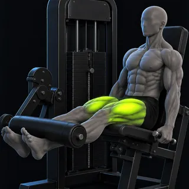
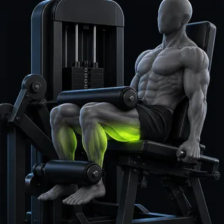

Hoy
La pantalla tal como está (tu captura).
Hoy

Propuesta · primera vez
Cuando nunca has hecho el ejercicio y no hay peso sugerido.
Pierna BSesión 00:07
Ejercicio 1 de 60 terminados

1 2
2 3
3
4
5
6
Sentadilla búlgara
Banca y mancuernas
4series
10repeticiones
90 sde descanso
Cómo hacerlo
Baja en 3 segundos, haz una pausa de 1 segundo abajo y sube en 1 segundo.
Ver la técnica completaSerie 1 de 4
—
peso en lb10
repeticionesPrimera vez: elige un peso con el que llegues a 10 con esfuerzo, sin perder la forma. Si te sobran muchas, sube la próxima serie.
Después descansas 90 s · el cronómetro arranca solo
SiguePeso muerto sumo9:41
7123456- "Ejercicio 1 de 6" en lugar del "1/4" gris dentro de la foto.
- Las miniaturas llevan su número; la actual con borde y las terminadas con palomita.
- El botón de flechas dice "¿Ocupado? Cambiar".
- Tres datos grandes: series, repeticiones y descanso. Sin "tempo", "excéntrico" ni "hipertrofia".
- Cómo hacerlo completo, en palabras, con enlace a la técnica.
- Ayuda la primera vez para elegir el peso, y debajo del botón: qué pasa después.
- Arriba dice "Sesión 00:07" y el reloj dice "Cronómetro".
Propuesta · ya lo has hecho
Con historial: el peso ya viene puesto y te dice por qué.
Pierna BSesión 06:40
Ejercicio 1 de 6Serie 3 de 4
123456
23456Sentadilla búlgara
Banca y mancuernas
4series
10repeticiones
90 sde descanso
Serie 3 de 4
25
lb · +5 vs la vez pasada10
repeticionesSube 5 lb: la vez pasada completaste las 4 series con 20 lb.
Después descansas 90 s · te falta 1 serie
SiguePeso muerto sumo9:41
- El peso ya viene puesto con lo que te toca hoy, y abajo dice cuánto subiste.
- Un renglón explica por qué sube o se repite.
- "Cómo hacerlo" se oculta a partir de la serie 2 para dejar más espacio; sigue en "Ver técnica".